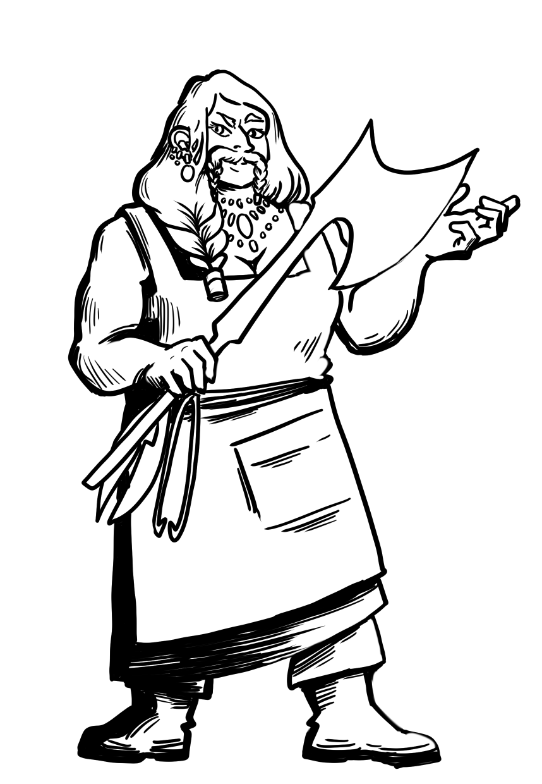

Axe of Cold Iron

Description
Are you unarmed against the woes of modern time ? Getting lost in the intricate
code of our society ? Fear not, for this recipe will give you the trusty tools
to navigate work interviews, family dinner and supermarket queues.
Ingredients
- A forge lit by the fire of a Red Dragon
- 20 kilograms of high quality Iron
- The last breath of an Ice Giant
- A hammer
Steps
- Ponder the metal for a few weeks, feeling it's pattern, veins and wants.
- Convince it to accept a new shape. Warmth (such as produced by the forge)
may help, along with whispers of promises, kind words as to its nature,
and general good natured exchanges. Some may react well to goat cheese.
- Fold your metal a hundred time, and a hundred time again.
- Consider a career change as you eat the leftover goat cheese.
- Set the shape of the metal with vigorous hammer strikes.
- Plunge in the breath of the giant (or a bucket of cold water).
>
Return to the Den